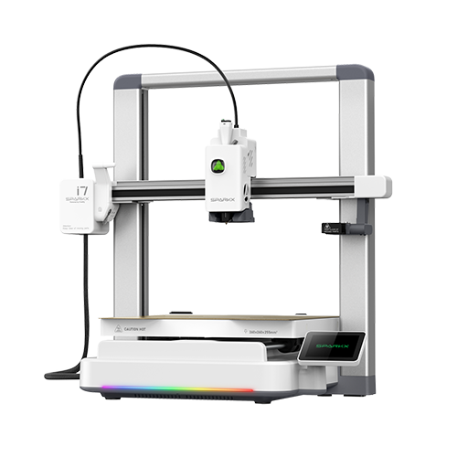
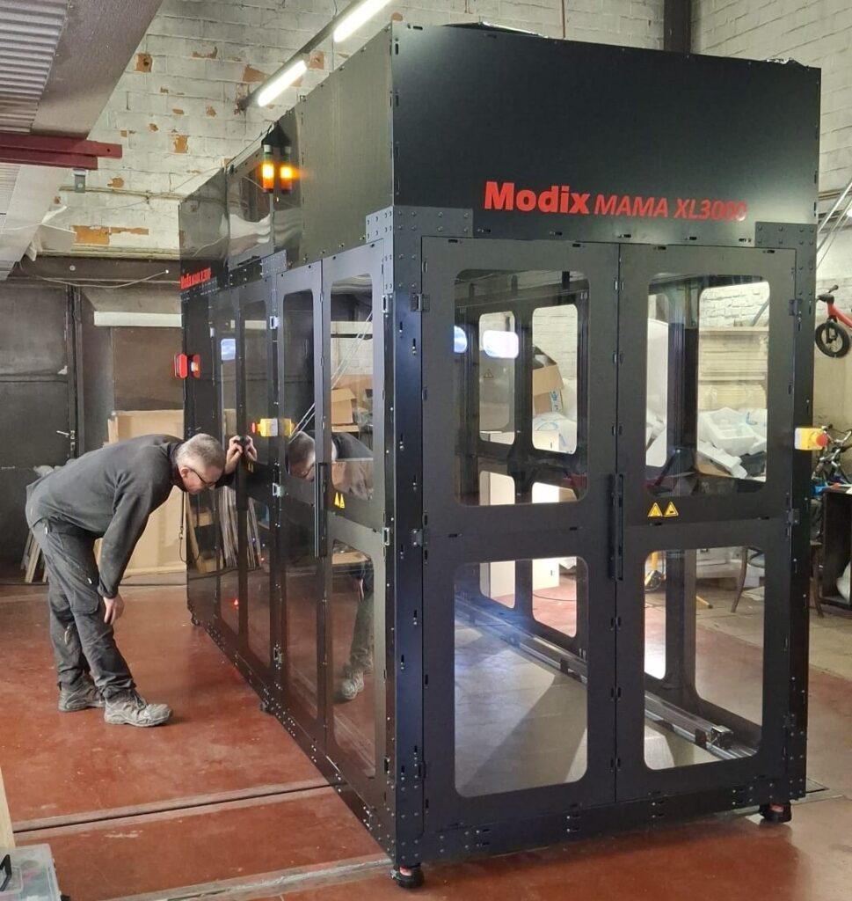
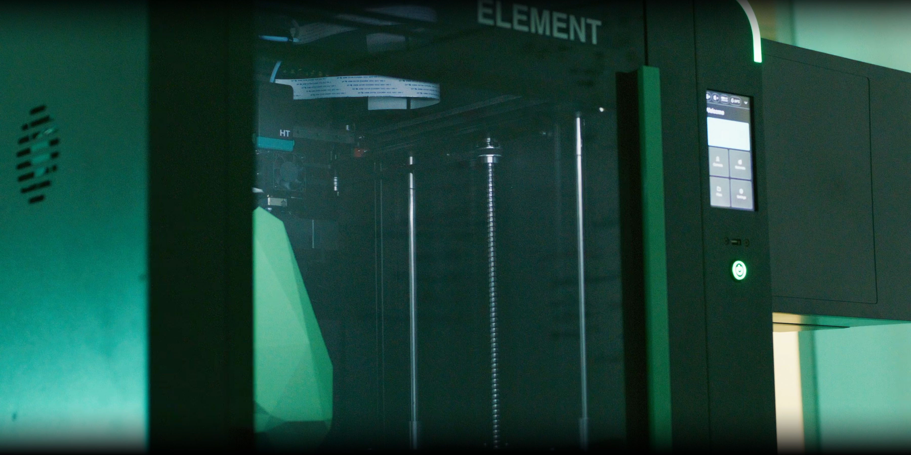
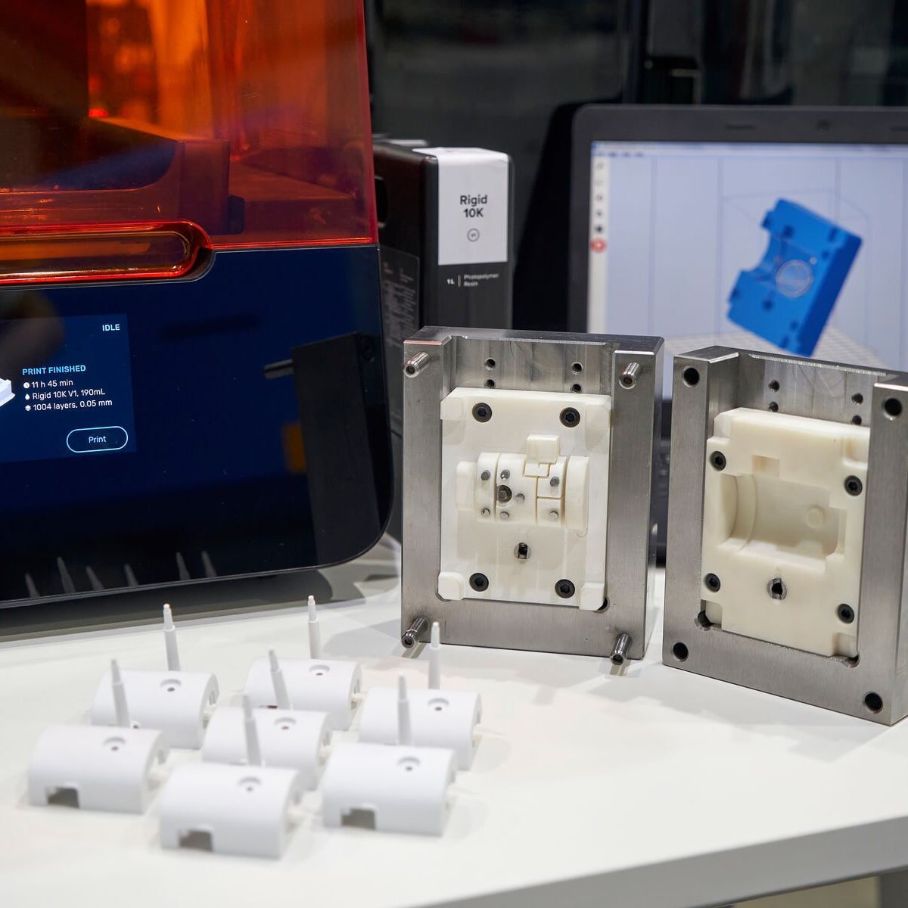

Plastic Injection Molding
Our core capability. We produce high-quality thermoplastic parts using precision injection molding — from small-batch prototyping runs to sustained production volumes. With in-house mold making, we control every step.
- Thermoplastic and engineered resin processing
- Tight tolerance molding for critical applications
- Small to medium production runs
- Insert molding and overmolding
- Full color matching and texturing
Mold Making
We design and build production-grade molds in-house — aluminum and steel tooling with fast turnaround and engineering support. Tooling and molding under one roof means faster iterations and lower costs.
- Aluminum and steel mold construction
- Single and multi-cavity mold designs
- Mold repair and modification services
- Engineering support and DFM analysis
- Rapid turnaround on prototype molds

Rapid Prototyping
Go from CAD to functional prototype in days. We combine 3D printing, printed molds, and rapid tooling to produce prototypes in production-grade materials — so you can test before committing to hard tooling.
- Functional prototypes in production materials
- Multiple iterations in days, not weeks
- Bridge production with 3D printed molds
- Design validation and fit testing
- Seamless transition to production tooling

3D Printing
Standard additive manufacturing for concept models, functional prototypes, jigs, fixtures, and end-use parts. We run FDM and resin printers to cover a wide range of materials and applications.
- FDM and SLA/resin printing
- ABS, PLA, PETG, nylon, and specialty filaments
- Jigs, fixtures, and manufacturing aids
- End-use parts for low-volume applications
- Fast turnaround — most parts in 1–3 days

Large Format 3D Printing
When standard build volumes aren't enough. Our large-format printers produce oversized parts, enclosures, panels, and fixtures as single pieces — eliminating assembly and reducing lead time.
- Oversized parts printed as single pieces
- Enclosures, housings, and structural components
- Trade show models and display pieces
- Eliminates multi-part assembly
- Cost-effective for low-volume large parts

High-Temp Resin Printing
For applications where standard plastics won't cut it. We print with high-performance engineered resins that withstand extreme temperatures, chemical exposure, and mechanical stress.
- Heat-resistant resins for demanding environments
- Chemical and solvent resistance
- Functional testing under real-world conditions
- Ideal for under-hood and engine-bay components
- Production-grade material properties

3D Printed Molds
Bridge the gap between prototype and production. We 3D print injection molds that let you run real thermoplastic parts in days — perfect for design validation and bridge production.
- Production-ready molds in days, not weeks
- Run real thermoplastic materials
- Bridge tooling while production molds are built
- Design validation with actual molded parts
- Dramatically reduced tooling costs
CO2 Laser Engraving
Precision engraving and cutting on non-metallic materials. Our CO2 laser handles plastics, wood, glass, acrylic, leather, and more — ideal for branding, part marking, and custom signage.
- Engraving on plastics, wood, glass, and acrylic
- Part numbering and identification
- Custom branding and logos
- Precision cutting of thin materials
- High-speed production marking
Fiber Laser Engraving & Marking
Permanent, high-contrast marking on metals and hard plastics. Essential for aerospace and medical traceability — serial numbers, data matrix codes, lot numbers, and regulatory marks.
- Permanent marking on metals (steel, aluminum, titanium)
- Data matrix and QR code serialization
- Aerospace and medical traceability compliance
- UDI and regulatory marking
- High-speed, high-precision batch marking